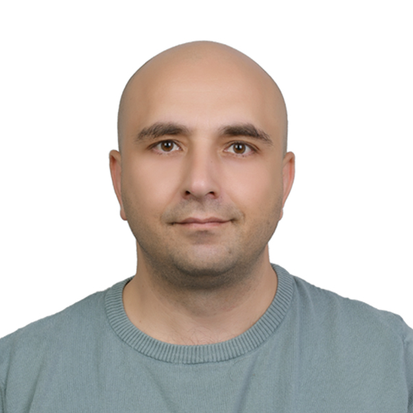

Mustafa Serdar Özden | WDD 130
Hello! My name is Serdar Özden an enthusiastic software development student with a strong foundation in Python, currently exploring web development. Passionate about coding and problem-solving, I'm committed to leveraging my skills to contribute to meaningful projects. My education at the University of BYU Idoho has equipped me with both theoretical knowledge and practical experience, fostering my growth as a developer. Outside the classroom, I enjoy participating in hackathons and coding challenges to enhance my abilities. Eager to learn and collaborate, I'm looking forward to starting my journey in the tech industry and making a positive impact.